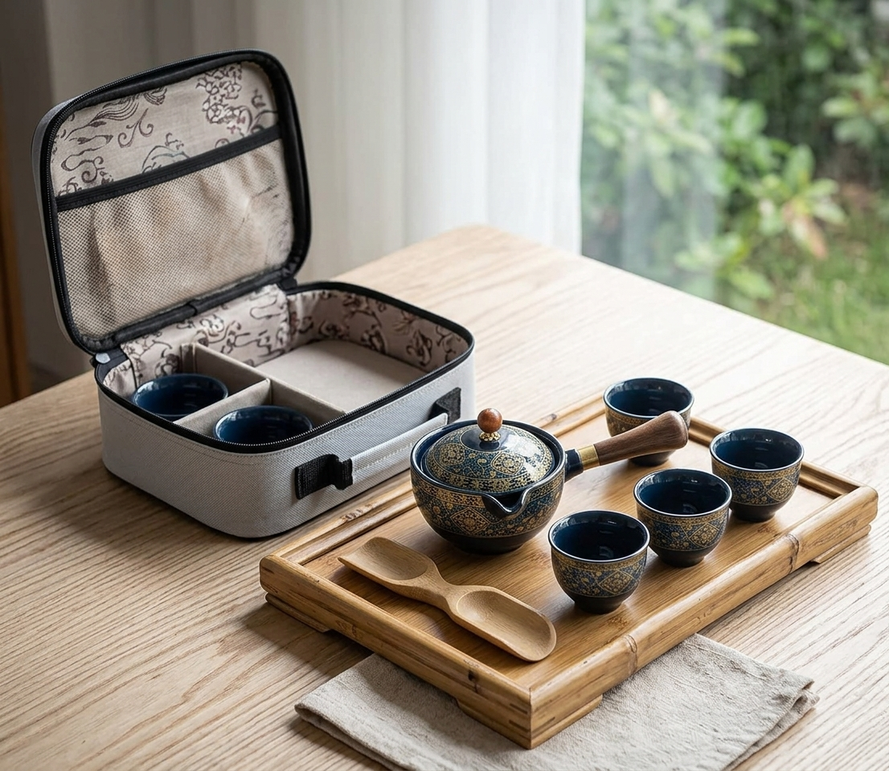

An Asian-style porcelain tea set with a side-handle teapot, four cups, and a padded carry case, made for home, office, and outdoors.

The teapot, cups, and tools zip into a padded carry bag, so nothing rattles around.
A rotating tea maker and infuser make it simple to brew loose leaf tea without a fuss.
Floral blue porcelain looks polished out of the box and packs neatly for gifting.
Brew a proper pot at your desk, on a picnic, or during travel, then pack it back up in minutes.
It is a good fit for people who love tea and small rituals and want them anywhere.
A neat setup for a slow afternoon.
A calm break without a full tea set.
Tea in the park or on a trip.
It is an Asian-style porcelain set, often sold as Gongfu style. It works well for Japanese green tea too.
Yes, but the padded case helps protect it while traveling.
It includes four small cups.
A portable porcelain tea set with carry case - see current pricing and availability on Amazon.
Check Price on Amazon →